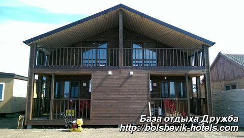

База відпочинку-готель «Дружба» розташована на березі Чорного моря в с. Приморське (Більшовик), між відомими курортними сел. Залізний порт і Лазурне. На захід від бази відпочинку «Дружба» розташувався Чорноморський заповідник, на схід - протяжна курортна зона.
Детальніше